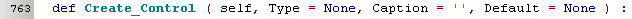
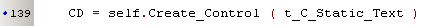
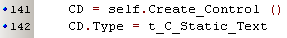
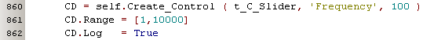
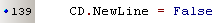
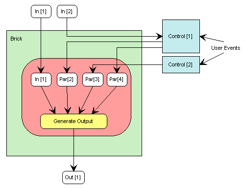
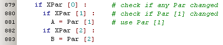

GUI Controls Intro  ( march 2009 )
( march 2009 )
Application Designer / Domain Expert / Control Designer / Core Developer
Introduction
Controls are the basic GUI building blocks used in Bricks. Controls transports information from the user to the Brick and vice-versa. In the beginning we shall need to extend the controls somewhat, but after a short time we'll have a complete set of controls and only cosmetic changes will be needed.
In the this part we'll describe how controls can be used to create new Bricks.
In the part "GUI Controls Overview", an overview will be given of all available controls, with enough detail to use them to build new Bricks.
The part "GUI Controls Building", will describe how to build new controls.
Help on Controls
The name of a control class always starts with "t_C_", so by typing this first characters in one of the PyLab_Works editors will popup an auto-completion list with all the available controls. In a PyLab_Works command-shell you can ask help about "t_C_". The chapter GUI Controls Overview, describes all the available controls. And last but not least the template manager (F7 form an editor) has a tab where all controls are available as an example, with all the specific parameters used.
Creating a Control Instance
A control is created by calling the Brick's "Create_Control".

Often you only have to specify the Type, because the default values for Caption and Default will suffice:

And as an alternative, which might be better readable, you might even specify the type as an attribute:

That's all !!! Everything else is done behind the scene: layout of controls, saving and restoring settings etc.
More Control Parameters
For some controls you might need to specify some additional parameters, because of your specific needs. e.g. you need a slider with a logarithmic changing value:

The parameters that are a available for each Control are given in the help about each Control.
If you want a Control to be positioned behind the previous Control on the same line, you can set the following attribute to False ( this will not work for all controls)

Data transport between Brick and Controls
Looking at the schematic below, shows that the communication between a GUI-control at it's parent Brick is always done through the Par-array of the Brick. If a control acts on the same Par as an input (e.g. Par [2] and Control [1]), the input is automatically passed to the control and the control decides what value will be passed to the Brick. A Control can also have extra parameters (e.g.Par [3] - Control [2] or Par[4] - Control [2] ), to exchange information between the Brick and the Control. Notice that the numbering starts at "1", which is done to get a human representation in the Brick Definitions. Don't bother with the complex numbering for the controls, because they'll see a zero-based Par-array, only containing the elements that concerns them.

So in your Brick you can simple check any use the Par-array in the following way:
